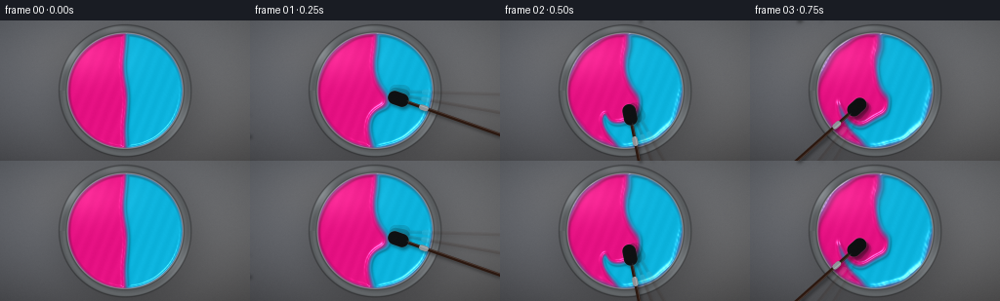
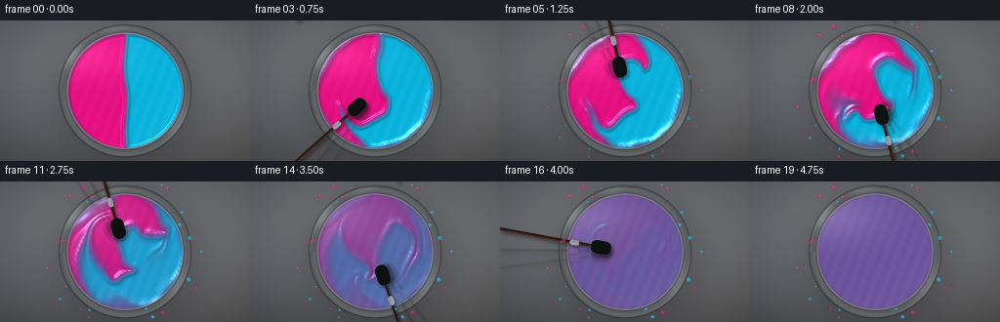
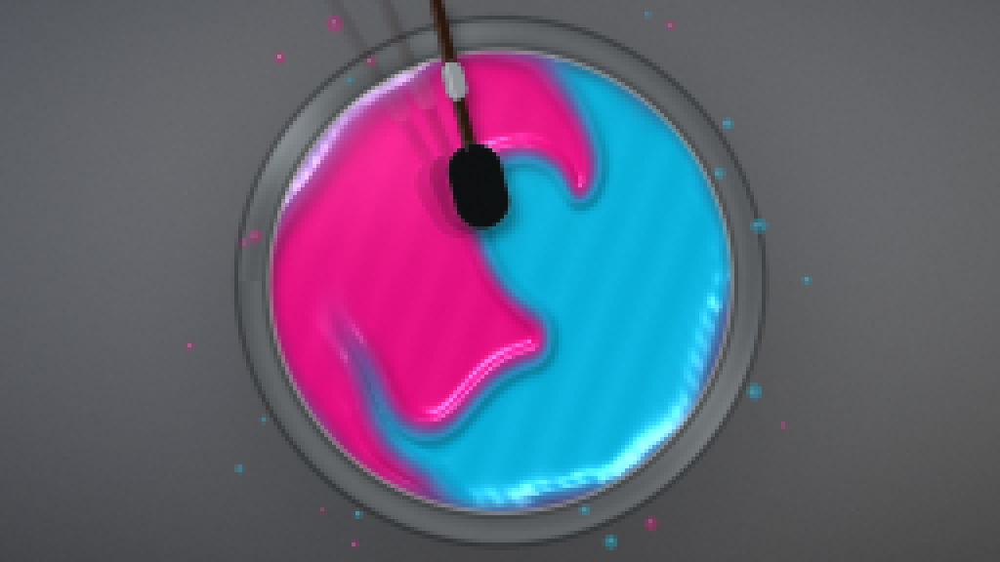
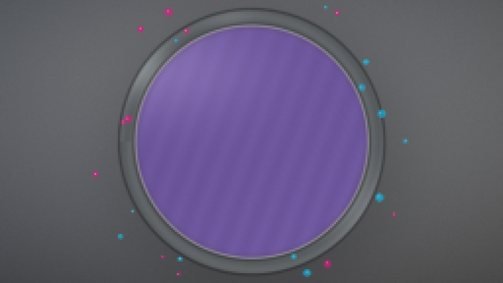
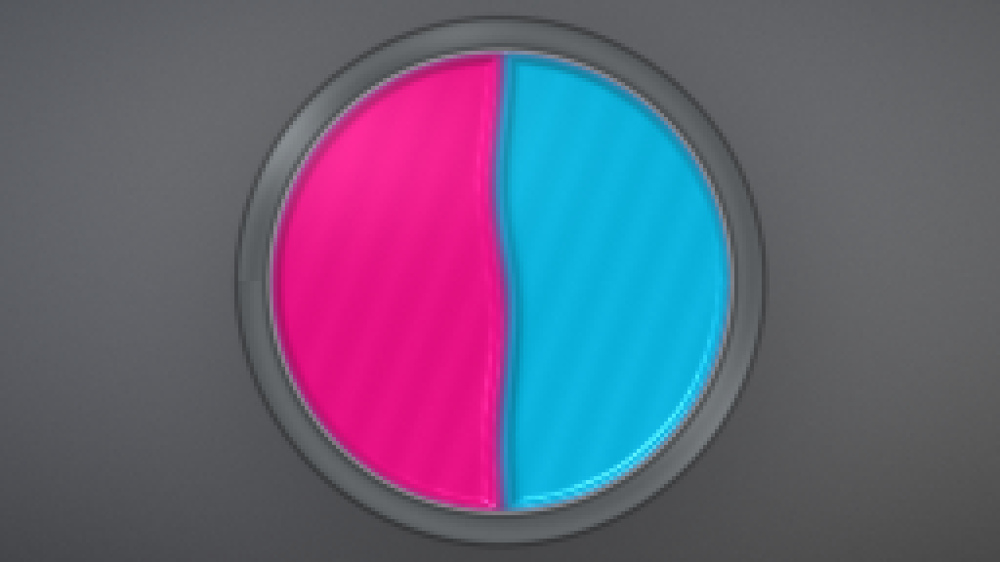
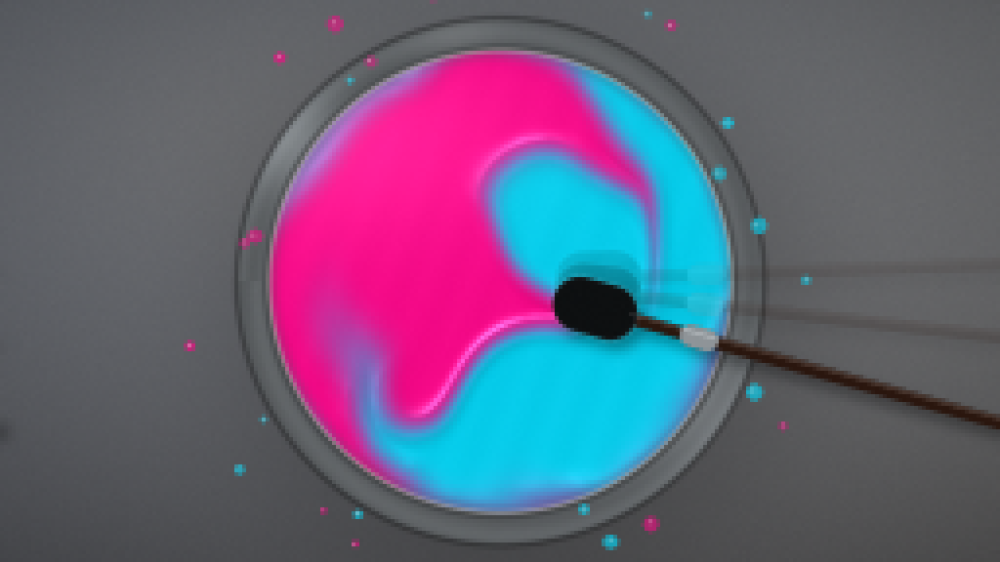
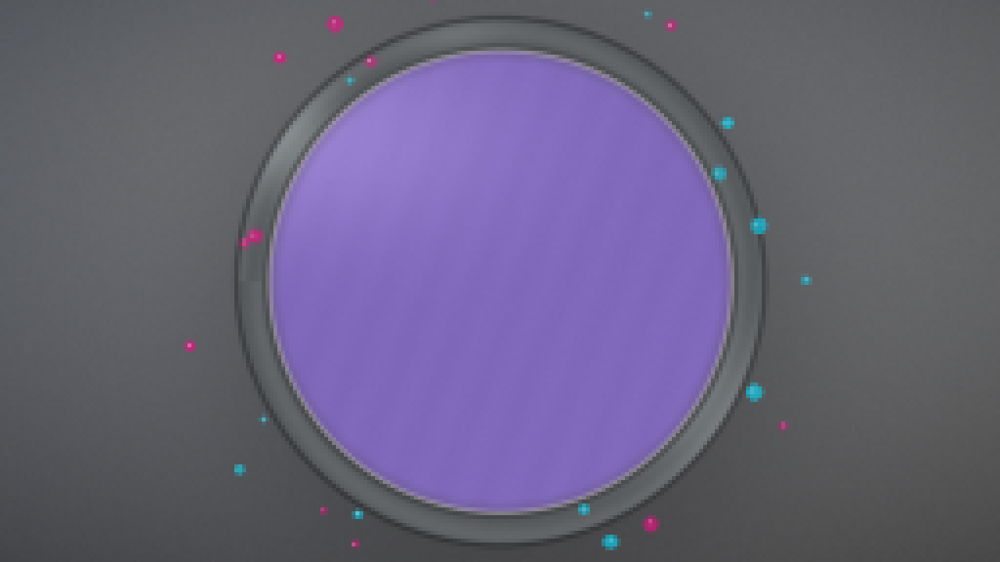
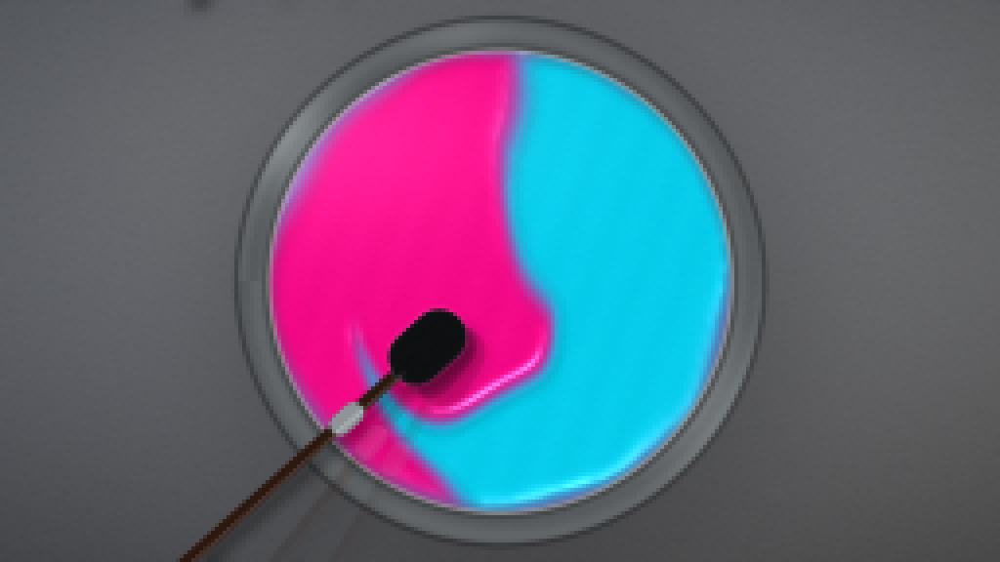

CODING AGENTS AS PIXEL WORLD MODELS
traex/DeepSeek-V4.1-Flash · phygen_124
点击播放 · 原生 RGB 像素
逐轮保存的候选
回放视频、检查图与代码变化。
每份候选均可单独播放。实际图片检查记录在下方工具轨迹中。
候选 01播放与检查图
点击播放 · 原生 RGB 像素

展开代码变化
--- 上一保存版本
+++ 本次保存版本
@@ -0,0 +1,400 @@
+"""Procedural cyan + magenta paint mixing clip.
+
+The pigment field is transported with a semi-Lagrangian advection pass under a
+time-varying stirring flow, then rendered as a glossy top-down paint surface.
+"""
+
+from pathlib import Path
+
+import cv2
+import numpy as np
+from PIL import Image, ImageDraw, ImageFilter
+
+import artifact_io
+
+
+ROOT = Path(__file__).resolve().parent
+
+SPEC_W, SPEC_H = 256, 144
+W, H = 768, 432
+FPS = 4
+FRAMES = 20
+
+SIM_W, SIM_H = 384, 216
+SIM_CX, SIM_CY = SIM_W / 2.0, SIM_H / 2.0
+SIM_R = 100.0
+
+BOWL_CX, BOWL_CY = W / 2.0, H / 2.0
+BOWL_R = 201.0
+PAINT_R = 177.0
+
+CYAN = np.array([0.025, 0.705, 0.890], dtype=np.float32)
+MAGENTA = np.array([0.920, 0.045, 0.505], dtype=np.float32)
+
+
+def smoothstep(edge0, edge1, x):
+ t = np.clip((x - edge0) / (edge1 - edge0), 0.0, 1.0)
+ return t * t * (3.0 - 2.0 * t)
+
+
+def stir_angle(t):
+ return -0.20 + 2.0 * np.pi * 0.66 * max(0.0, t - 0.12)
+
+
+def tool_position(t):
+ theta = stir_angle(t)
+ return 0.405 * np.cos(theta), 0.405 * np.sin(theta), theta
+
+
+def stir_envelope(t):
+ rise = smoothstep(0.06, 0.48, t)
+ fall = 1.0 - smoothstep(4.20, 4.62, t)
+ return rise * fall
+
+
+def make_velocity(t):
+ yy, xx = np.mgrid[0:SIM_H, 0:SIM_W].astype(np.float32)
+ x = (xx - SIM_CX) / SIM_R
+ y = (yy - SIM_CY) / SIM_R
+
+ env = stir_envelope(t)
+ px, py, theta = tool_position(t)
+ dx = x - px
+ dy = y - py
+ r2 = dx * dx + dy * dy
+
+ # The moving paddle creates a compact vortex with a small inward pull.
+ local = np.exp(-r2 / (2.0 * 0.215**2))
+ denom = np.sqrt(r2) + 0.055
+ u = 2.25 * local * (-dy / denom)
+ v = 2.25 * local * (dx / denom)
+ u -= 0.50 * local * dx / denom
+ v -= 0.50 * local * dy / denom
+
+ # A broad vessel-scale circulation keeps the whole body of paint moving.
+ rr = np.sqrt(x * x + y * y) + 1e-4
+ global_v = 0.42 * np.exp(-(rr / 0.80) ** 2)
+ u += global_v * (-y)
+ v += global_v * x
+
+ # Incompressible-looking eddies add folds and fine marbling.
+ turb = 0.21 * np.exp(-(rr / 0.82) ** 4)
+ kx, ky = 4.8, 3.9
+ phase = 0.58 * t
+ u += turb * (
+ np.cos(kx * x + phase) * np.cos(ky * y - 0.7 * phase)
+ + 0.55 * np.cos(2.3 * kx * x - 1.3 * phase) * np.sin(1.7 * ky * y)
+ )
+ v += turb * (
+ -np.sin(kx * x + phase) * np.sin(ky * y - 0.7 * phase)
+ + 0.55 * np.cos(2.3 * kx * x - 1.3 * phase) * np.cos(1.7 * ky * y)
+ )
+
+ # Guide the flow toward the paddle on its leading side, then release it.
+ lead = 0.24 * local * (np.cos(theta) * dx + np.sin(theta) * dy)
+ u -= lead * dx / denom
+ v -= lead * dy / denom
+
+ bowl_mask = smoothstep(1.03, 0.86, rr)
+ return (u * env * bowl_mask).astype(np.float32), (v * env * bowl_mask).astype(np.float32)
+
+
+def remap_field(field, map_x, map_y):
+ return cv2.remap(
+ field,
+ map_x,
+ map_y,
+ interpolation=cv2.INTER_LINEAR,
+ borderMode=cv2.BORDER_REFLECT_101,
+ )
+
+
+def advect(field, u, v, dt):
+ yy, xx = np.mgrid[0:SIM_H, 0:SIM_W].astype(np.float32)
+ map_x = xx - u * dt * SIM_R
+ map_y = yy - v * dt * SIM_R
+ return remap_field(field, map_x, map_y)
+
+
+def initial_difference():
+ yy, xx = np.mgrid[0:SIM_H, 0:SIM_W].astype(np.float32)
+ x = (xx - SIM_CX) / SIM_R
+ y = (yy - SIM_CY) / SIM_R
+ rr = np.sqrt(x * x + y * y)
+
+ # A softly curved split keeps the two equal pools from reading as a hard
+ # geometric mask. The soft transition also supplies sub-pixel antialiasing.
+ seam = 0.018 * np.sin(3.3 * y) + 0.012 * np.sin(7.0 * y + 0.8)
+ d = np.tanh((x - seam) / 0.020)
+ edge = smoothstep(0.895, 0.865, rr)
+ return (d * edge).astype(np.float32)
+
+
+def simulate():
+ d = initial_difference()
+ fields = []
+ substeps = 22
+ dt = 1.0 / (FPS * substeps)
+
+ for frame in range(FRAMES):
+ t0 = frame / FPS
+ for sub in range(substeps):
+ t = t0 + sub * dt
+ u, v = make_velocity(t)
+ d = advect(d, u, v, dt)
+ d = cv2.GaussianBlur(d, (0, 0), 0.33)
+
+ # Stirring progressively subdivides and diffuses the pigment interface.
+ frame_sigma = 0.52 + 0.07 * frame
+ d = cv2.GaussianBlur(d, (0, 0), frame_sigma)
+
+ # Final homogenization. Early frames retain the two original colors;
+ # later frames collapse toward a true 50/50 violet mixture.
+ mix_schedule = [1.0] * 10 + [0.94, 0.88, 0.81, 0.72, 0.62, 0.51, 0.39, 0.26, 0.12, 0.025]
+ d *= mix_schedule[frame]
+ d = np.clip(d, -1.0, 1.0)
+ fields.append(d.astype(np.float32))
+
+ return fields
+
+
+def make_background():
+ yy, xx = np.mgrid[0:H, 0:W].astype(np.float32)
+ nx = (xx - W / 2) / (W / 2)
+ ny = (yy - H / 2) / (H / 2)
+
+ base = np.empty((H, W, 3), dtype=np.float32)
+ base[..., 0] = 0.365 + 0.040 * (-ny) + 0.012 * nx
+ base[..., 1] = 0.375 + 0.045 * (-ny) + 0.008 * nx
+ base[..., 2] = 0.392 + 0.050 * (-ny)
+
+ # Warm overhead light and a cool, quiet edge falloff.
+ radial = np.sqrt((nx * 0.82) ** 2 + (ny * 0.98) ** 2)
+ vignette = np.clip(1.10 - 0.22 * radial**1.65, 0.74, 1.08)
+ base *= vignette[..., None]
+ base += np.array([0.020, 0.014, 0.005], dtype=np.float32) * np.exp(
+ -((nx + 0.42) ** 2 + (ny + 0.52) ** 2) / 0.22
+ )[..., None]
+
+ rng = np.random.default_rng(142)
+ grain = rng.normal(0.0, 1.0, (H, W)).astype(np.float32)
+ grain = cv2.GaussianBlur(grain, (0, 0), 0.55)
+ base += grain[..., None] * 0.006
+ return np.clip(base, 0.0, 1.0)
+
+
+def rounded_rect_mask(shape, center, length, width, angle):
+ h, w = shape
+ yy, xx = np.mgrid[0:h, 0:w].astype(np.float32)
+ ca, sa = np.cos(angle), np.sin(angle)
+ dx = xx - center[0]
+ dy = yy - center[1]
+ along = ca * dx + sa * dy
+ across = -sa * dx + ca * dy
+ radius = width / 2.0
+ qx = np.abs(along) - (length / 2.0 - radius)
+ qy = np.abs(across)
+ outside = np.sqrt(np.maximum(qx, 0.0) ** 2 + np.maximum(qy, 0.0) ** 2)
+ inside = np.minimum(np.maximum(qx, qy), 0.0)
+ dist = outside + inside - radius
+ return np.clip(0.5 - dist, 0.0, 1.0)
+
+
+def draw_tool(image, t):
+ fade = smoothstep(0.00, 0.22, t) * (1.0 - smoothstep(4.28, 4.72, t))
+ if fade <= 0.001:
+ return image
+
+ px, py, theta = tool_position(t)
+ center = np.array([BOWL_CX + px * BOWL_R, BOWL_CY + py * BOWL_R], dtype=np.float32)
+ radial = np.array([np.cos(theta), np.sin(theta)], dtype=np.float32)
+ tangent = np.array([-np.sin(theta), np.cos(theta)], dtype=np.float32)
+
+ # Motion-blurred ghosting helps the fast paddle read at four frames/sec.
+ for ghost, alpha in ((0.075, 0.12), (0.040, 0.18), (0.0, 1.0)):
+ gt = max(0.0, t - ghost)
+ gx, gy, ga = tool_position(gt)
+ gc = np.array([BOWL_CX + gx * BOWL_R, BOWL_CY + gy * BOWL_R], dtype=np.float32)
+ gr = np.array([np.cos(ga), np.sin(ga)], dtype=np.float32)
+ gtangent = np.array([-np.sin(ga), np.cos(ga)], dtype=np.float32)
+
+ blade = rounded_rect_mask((H, W), gc - gr * 6.0, 66.0, 42.0, ga)
+ shaft = rounded_rect_mask((H, W), gc + gr * 186.0, 330.0, 10.0, ga)
+ ferrule = rounded_rect_mask((H, W), gc + gr * 77.0, 30.0, 17.0, ga)
+ union = np.maximum.reduce([blade, shaft, ferrule]) * fade * alpha
+
+ # Contact shadow and dark silicone / walnut handle.
+ shadow = np.roll(np.roll(union, 8, axis=0), 6, axis=1)
+ shadow = cv2.GaussianBlur(shadow, (0, 0), 5.0)
+ image *= (1.0 - 0.42 * shadow[..., None])
+
+ wood = np.broadcast_to(
+ np.array([0.115, 0.065, 0.043], dtype=np.float32), (H, W, 3)
+ ).copy()
+ wood += np.array([0.060, 0.025, 0.012], dtype=np.float32) * np.clip(
+ 0.55 + 0.35 * tangent[0] * ((np.arange(W)[None, :] - gc[0]) / W), 0.0, 1.0
+ )[..., None]
+ color = wood
+ color = np.where(blade[..., None] > 0.5, np.array([0.045, 0.052, 0.057]), color)
+ color = np.where(ferrule[..., None] > 0.5, np.array([0.53, 0.56, 0.58]), color)
+ image = image * (1.0 - union[..., None]) + color * union[..., None]
+
+ # Narrow highlights on the silicone edge and metal ferrule.
+ blade_edge = np.clip(cv2.Laplacian(blade.astype(np.float32), cv2.CV_32F), 0.0, 1.0)
+ rim_light = cv2.GaussianBlur(blade_edge, (0, 0), 1.0) * fade * alpha
+ image += rim_light[..., None] * np.array([0.22, 0.25, 0.27])
+
+ shaft_line = rounded_rect_mask(
+ (H, W), gc + gr * 186.0 - gtangent * 3.0, 330.0, 2.0, ga
+ )
+ image += (shaft_line * fade * alpha * 0.15)[..., None]
+
+ return np.clip(image, 0.0, 1.0)
+
+
+def add_splatter(image, t):
+ appear = smoothstep(0.7, 1.7, t)
+ if appear <= 0.0:
+ return image
+ rng = np.random.default_rng(825)
+ overlay = Image.fromarray(np.clip(image * 255, 0, 255).astype(np.uint8))
+ draw = ImageDraw.Draw(overlay, "RGBA")
+
+ for i in range(26):
+ angle = rng.uniform(0, 2 * np.pi)
+ radius = rng.uniform(181, 247)
+ cx = BOWL_CX + radius * np.cos(angle)
+ cy = BOWL_CY + radius * np.sin(angle)
+ size = rng.uniform(1.8, 6.4) * (0.7 + 0.3 * appear)
+ color = CYAN if i % 2 == 0 else MAGENTA
+ rgb = tuple(int(255 * v) for v in color)
+ alpha = int(175 * appear * rng.uniform(0.55, 1.0))
+ draw.ellipse((cx - size, cy - size, cx + size, cy + size), fill=rgb + (alpha,))
+ draw.ellipse(
+ (cx - size * 0.36, cy - size * 0.38, cx - size * 0.02, cy - size * 0.02),
+ fill=(255, 255, 255, min(110, alpha)),
+ )
+ return np.asarray(overlay).astype(np.float32) / 255.0
+
+
+def render_frame(d, t, background):
+ image = background.copy()
+ yy, xx = np.mgrid[0:H, 0:W].astype(np.float32)
+ nx = (xx - BOWL_CX) / BOWL_R
+ ny = (yy - BOWL_CY) / BOWL_R
+ rr = np.sqrt(nx * nx + ny * ny)
+ angle = np.arctan2(ny, nx)
+
+ # Soft cast shadow beneath the vessel.
+ shadow = np.exp(-(((xx - BOWL_CX - 10) / 222.0) ** 2 + ((yy - BOWL_CY - 17) / 214.0) ** 2) ** 2)
+ image *= (1.0 - 0.26 * shadow[..., None])
+
+ # Brushed stainless rim with two highlights and a dark inner seat.
+ rim = smoothstep(205.0, 200.0, rr * BOWL_R) * smoothstep(178.0, 185.0, rr * BOWL_R)
+ rim_shade = (
+ 0.58
+ + 0.25 * np.exp(-((angle + 2.55) / 0.22) ** 2)
+ + 0.16 * np.exp(-((angle - 0.55) / 0.32) ** 2)
+ + 0.035 * np.sin(57.0 * rr + 1.7 * angle)
+ )
+ metal = np.stack(
+ [0.58 * rim_shade, 0.61 * rim_shade, 0.63 * rim_shade], axis=-1
+ ).astype(np.float32)
+ metal += 0.05 * np.exp(-((angle + 1.75) / 0.18) ** 2)[..., None]
+ image = image * (1.0 - rim[..., None]) + metal * rim[..., None]
+
+ outer_edge = smoothstep(206.5, 202.5, rr * BOWL_R) * smoothstep(199.0, 203.0, rr * BOWL_R)
+ image *= (1.0 - 0.38 * outer_edge[..., None])
+ inner_lip = smoothstep(185.0, 179.0, rr * BOWL_R) * smoothstep(171.0, 178.0, rr * BOWL_R)
+ image = image * (1.0 - 0.55 * inner_lip[..., None]) + np.array(
+ [0.15, 0.17, 0.18], dtype=np.float32
+ ) * (0.55 * inner_lip[..., None])
+
+ # Bowl enamel remains visible as a narrow inner margin around the paint.
+ inner = smoothstep(181.0, 176.0, rr * BOWL_R)
+ enamel = np.broadcast_to(
+ np.array([0.80, 0.79, 0.76], dtype=np.float32), (H, W, 3)
+ ).copy()
+ enamel *= (0.84 + 0.18 * np.clip(1.0 - rr, 0.0, 1.0))[..., None]
+ image = image * (1.0 - inner[..., None]) + enamel * inner[..., None]
+
+ # Upsample the simulated concentration field and derive the two pigments.
+ d_hi = cv2.resize(d, (W, H), interpolation=cv2.INTER_CUBIC)
+ d_hi = np.clip(d_hi, -1.0, 1.0)
+ c = (1.0 + d_hi) * 0.5
+ m = 1.0 - c
+ color = c[..., None] * CYAN + m[..., None] * MAGENTA
+
+ # Subtractive mixing gives the fully blended violet a little more depth.
+ mixed = 4.0 * c * m
+ color *= (1.0 - 0.16 * mixed)[..., None]
+ color += np.array([0.012, 0.004, 0.030], dtype=np.float32) * mixed[..., None]
+
+ # Surface relief: meniscus, pigment ridges, and a restrained oil-paint tooth.
+ gy, gx = np.gradient(cv2.GaussianBlur(d_hi, (0, 0), 1.6))
+ ridge = np.clip(np.sqrt(gx * gx + gy * gy) * 7.0, 0.0, 0.34)
+ tooth = (
+ 0.010 * np.sin(0.18 * xx + 0.07 * yy + 0.8 * t)
+ + 0.007 * np.sin(0.42 * xx - 0.31 * yy + 2.1 * t)
+ )
+ height = 0.16 * np.clip(rr / 0.89, 0.0, 1.0) ** 2 + ridge + tooth
+ hy, hx = np.gradient(cv2.GaussianBlur(height, (0, 0), 1.2))
+ nx_s = -hx * 18.0
+ ny_s = -hy * 18.0
+ nz = np.ones_like(nx_s)
+ norm = np.sqrt(nx_s * nx_s + ny_s * ny_s + nz * nz)
+ nx_s, ny_s, nz = nx_s / norm, ny_s / norm, nz / norm
+
+ lx, ly, lz = -0.46, -0.64, 0.62
+ diffuse = np.clip(nx_s * lx + ny_s * ly + nz * lz, 0.0, 1.0)
+ shade = 0.73 + 0.34 * diffuse
+ paint = color * shade[..., None]
+
+ # Broad softbox reflection plus tight varnish glints on pigment ridges.
+ softbox = np.exp(-(((xx - 0.31 * W) / 155.0) ** 2 + ((yy - 0.24 * H) / 78.0) ** 2))
+ paint += softbox[..., None] * np.array([0.105, 0.105, 0.100], dtype=np.float32)
+ half_x, half_y, half_z = lx, ly, lz + 1.0
+ half_norm = np.sqrt(half_x**2 + half_y**2 + half_z**2)
+ spec = np.clip(
+ (nx_s * half_x + ny_s * half_y + nz * half_z) / half_norm, 0.0, 1.0
+ ) ** 38
+ paint += spec[..., None] * np.array([0.52, 0.55, 0.59], dtype=np.float32)
+
+ # Darkened meniscus at the paint / enamel boundary.
+ paint_r = smoothstep(179.0, 174.5, rr * BOWL_R)
+ meniscus = np.exp(-((rr * BOWL_R - 174.5) / 4.2) ** 2)
+ paint *= (1.0 - 0.20 * meniscus)[..., None]
+ paint += meniscus[..., None] * np.array([0.055, 0.050, 0.062], dtype=np.float32)
+ image = image * (1.0 - paint_r[..., None]) + np.clip(paint, 0.0, 1.0) * paint_r[..., None]
+
+ image = draw_tool(image, t)
+ image = add_splatter(image, t)
+
+ # Gentle final grade and tiny film grain keep the flat-color regions alive.
+ image = np.clip(image, 0.0, 1.0)
+ image = image**0.94
+ image *= np.array([1.015, 1.005, 1.000], dtype=np.float32)
+ rng = np.random.default_rng(700 + int(round(t * 100)))
+ grain = rng.normal(0.0, 1.0, (H, W)).astype(np.float32)
+ image += grain[..., None] * 0.0045
+ return np.clip(image, 0.0, 1.0)
+
+
+def main():
+ fields = simulate()
+ background = make_background()
+ frames = []
+
+ for frame, d in enumerate(fields):
+ t = frame / FPS
+ image = render_frame(d, t, background)
+ small = cv2.resize(image, (SPEC_W, SPEC_H), interpolation=cv2.INTER_AREA)
+ frames.append(np.clip(small * 255.0 + 0.5, 0, 255).astype(np.uint8))
+ print(f"rendered frame {frame + 1:02d}/{FRAMES}")
+
+ frames = np.stack(frames)
+ artifact_io.save(frames, ROOT)
+
+
+if __name__ == "__main__":
+ main()
候选 02播放与检查图
点击播放 · 原生 RGB 像素

展开代码变化
--- 上一保存版本
+++ 本次保存版本
@@ -28,8 +28,8 @@
BOWL_R = 201.0
PAINT_R = 177.0
-CYAN = np.array([0.025, 0.705, 0.890], dtype=np.float32)
-MAGENTA = np.array([0.920, 0.045, 0.505], dtype=np.float32)
+CYAN = np.array([0.010, 0.805, 0.940], dtype=np.float32)
+MAGENTA = np.array([0.965, 0.018, 0.515], dtype=np.float32)
def smoothstep(edge0, edge1, x):
@@ -327,27 +327,27 @@
# Subtractive mixing gives the fully blended violet a little more depth.
mixed = 4.0 * c * m
- color *= (1.0 - 0.16 * mixed)[..., None]
- color += np.array([0.012, 0.004, 0.030], dtype=np.float32) * mixed[..., None]
+ color *= (1.0 - 0.055 * mixed)[..., None]
+ color += np.array([0.020, 0.000, 0.045], dtype=np.float32) * mixed[..., None]
# Surface relief: meniscus, pigment ridges, and a restrained oil-paint tooth.
gy, gx = np.gradient(cv2.GaussianBlur(d_hi, (0, 0), 1.6))
- ridge = np.clip(np.sqrt(gx * gx + gy * gy) * 7.0, 0.0, 0.34)
+ ridge = np.clip(np.sqrt(gx * gx + gy * gy) * 3.6, 0.0, 0.20)
tooth = (
0.010 * np.sin(0.18 * xx + 0.07 * yy + 0.8 * t)
+ 0.007 * np.sin(0.42 * xx - 0.31 * yy + 2.1 * t)
)
height = 0.16 * np.clip(rr / 0.89, 0.0, 1.0) ** 2 + ridge + tooth
hy, hx = np.gradient(cv2.GaussianBlur(height, (0, 0), 1.2))
- nx_s = -hx * 18.0
- ny_s = -hy * 18.0
+ nx_s = -hx * 10.0
+ ny_s = -hy * 10.0
nz = np.ones_like(nx_s)
norm = np.sqrt(nx_s * nx_s + ny_s * ny_s + nz * nz)
nx_s, ny_s, nz = nx_s / norm, ny_s / norm, nz / norm
lx, ly, lz = -0.46, -0.64, 0.62
diffuse = np.clip(nx_s * lx + ny_s * ly + nz * lz, 0.0, 1.0)
- shade = 0.73 + 0.34 * diffuse
+ shade = 0.81 + 0.24 * diffuse
paint = color * shade[..., None]
# Broad softbox reflection plus tight varnish glints on pigment ridges.
@@ -395,6 +395,5 @@
frames = np.stack(frames)
artifact_io.save(frames, ROOT)
-
if __name__ == "__main__":
main()
候选 03播放与检查图
可观测工具轨迹
实际执行的命令与返回图片。
命令 1exit 0
/bin/bash -lc "find . -maxdepth 2 -type f | sort | sed -n '1,200p'"
命令 2exit 0
/bin/bash -lc "pwd && rg --files -g 'prompt.txt' -g 'GENERATION_RULES.md' -g 'task_spec.json' -g '"'!node_modules'"' -g '"'!venv'"'"
命令 3exit 0
/bin/bash -lc "command -v ffmpeg; command -v blender; command -v python3; command -v node; command -v chromium; command -v google-chrome; python3 - <<'PY' mods=['numpy','PIL','cv2','imageio','matplotlib','torch','moviepy','trimesh'] for m in mods: try: x=__import__(m); print(m, getattr(x,'__version__','ok')) except Exception as e: print(m,'MISSING',str(e)[:80]) PY"
命令 4exit 0
/bin/bash -lc "sed -n '1,240p' prompt.txt"
命令 5exit 0
/bin/bash -lc 'cat task_spec.json'
命令 6exit 0
/bin/bash -lc "sed -n '1,260p' GENERATION_RULES.md"
命令 7exit 0
/bin/bash -lc "sed -n '1,240p' artifact_io.py; sed -n '1,200p' player_template.html"
命令 8exit 1
/bin/bash -lc 'MPLCONFIGDIR=.tmp/mpl python3 generate.py'
命令 9exit 1
/bin/bash -lc 'MPLCONFIGDIR=.tmp/mpl python3 generate.py'
命令 10exit 1
/bin/bash -lc 'MPLCONFIGDIR=.tmp/mpl python3 generate.py'
命令 11exit 0
/bin/bash -lc 'MPLCONFIGDIR=.tmp/mpl python3 generate.py'
命令 12exit 0
/bin/bash -lc "python3 - <<'PY'
from PIL import Image
from pathlib import Path
for i in [0,5,10,15,19]:
im=Image.open(f'frames/{i:02d}.png')
im.resize((1024,576), Image.Resampling.NEAREST).save(f'.tmp/frame_{i:02d}_large.png')
PY"命令 13exit 0
/bin/bash -lc "python3 - <<'PY'
from PIL import Image
import numpy as np
for i in [0,2,5,10,15,19]:
a=np.asarray(Image.open(f'frames/{i:02d}.png'))
r=a[45:100,90:165]
print(i, 'center', np.median(r.reshape(-1,3),0), 'paint', np.mean(a[40:105,80:175].reshape(-1,3),0), 'minmax', (a.min(),a.max()))
PY"命令 14exit 0
/bin/bash -lc 'ls -lh frames | tail -5; du -sh frames inspection.png transition_check.png'
命令 15exit 0
/bin/bash -lc 'mkdir -p candidate_v1 && cp -r frames candidate_v1/ && cp inspection.png transition_check.png candidate_v1/'
命令 16exit 0
/bin/bash -lc 'MPLCONFIGDIR=.tmp/mpl python3 generate.py'
命令 17exit 0
/bin/bash -lc "python3 - <<'PY'
from PIL import Image
import numpy as np
for i in [0,3,7,11,15,19]:
im=Image.open(f'frames/{i:02d}.png'); print(i, im.mode, im.size)
im.resize((1024,576), Image.Resampling.NEAREST).save(f'.tmp/v2_{i:02d}_large.png')
PY"命令 18exit 0
/bin/bash -lc "python3 - <<'PY'
import json, numpy as np
from pathlib import Path
from PIL import Image
spec=json.loads(Path('task_spec.json').read_text())
z=np.load('pixels.npz')['pixels']
print('pixels',z.shape,z.dtype,'range',z.min(),z.max())
print('frames',len(list(Path('frames').glob('*.png'))),'index',Path('index.html').stat().st_size,'npz',Path('pixels.npz').stat().st_size)
# Verify packed data round-trips to all 20 PNGs.
ok=True
for i in range(spec['frames']):
p=z[:,:,i]; rgb=np.stack([(p>>16)&255,(p>>8)&255,p&255],axis=-1).astype(np.uint8)
q=np.asarray(Image.open(f'frames/{i:02d}.png'))
if not np.array_equal(rgb,q): ok=False; print('mismatch',i)
print('roundtrip',ok)
PY"命令 19exit 0
/bin/bash -lc 'git status --short 2>/dev/null || true; ls -lh task_spec.json prompt.txt generate.py pixels.npz index.html inspection.png transition_check.png'
命令 20exit 0
/bin/bash -lc "python3 - <<'PY'
import numpy as np
from PIL import Image
for i in [0,4,8,12,16,19]:
a=np.asarray(Image.open(f'frames/{i:02d}.png')).astype(float)
# central paint region only
reg=a[42:102,78:178].reshape(-1,3)
print(f'{i:02d}: mean RGB {reg.mean(0).round(1)}, std {reg.std(0).round(1)}')
PY"命令 21exit 0
/bin/bash -lc "python3 -m py_compile generate.py && python3 - <<'PY'
from pathlib import Path
import json,re
spec=json.loads(Path('task_spec.json').read_text())
html=Path('index.html').read_text()
assert 'window.__pixelReady=true' in html and '__DATA__' not in html
assert len(list(Path('frames').glob('*.png'))) == spec['frames']
print('validation passed: 20 frames, packed tensor and standalone player present')
PY"视觉工具实际返回图片 1

视觉工具实际返回图片 2

视觉工具实际返回图片 3

视觉工具实际返回图片 4

视觉工具实际返回图片 5

视觉工具实际返回图片 6

视觉工具实际返回图片 7

视觉工具实际返回图片 8

视觉工具实际返回图片 9

保存候选 3 份；完成命令 21 次；可验证图片返回 9 张。原始 API 响应与完整日志保留在本地。